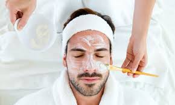

Cuidado de piel para mujeres según tu edad
Cuidado para la piel del hombre
Algunos productos llegan al mercado y desaparecen sin pena ni gloria, mientras que otros llegan para quedarse en nuestras vidas durante generaciones. Descubre cómo ha cambiado el cuidado de la piel a lo largo de los años y cómo LOS COSMETICOS se convirtió en sinónimo de protección y cuidado.
Link Concepto básico de la piel
- Usar protector solar diariamiente
- Dejar secar el protector solar y aplicar el maquillaje.
- Usar maquillaje que sea acorde a cada piel.
- Cada noche, desmaquillar, usar tonico para limpiar correctamente.
- Aplicar una crema nocturna para humectar, esta debe ser acorde a cada tipo de piel.
Los principales cuidados que debemos tener con nuestra piel son:

Nos puedes visitar para cuidarte la piel...
Excelentes tratamientos, distintas Tecnicas...
Promociones y descuentos...